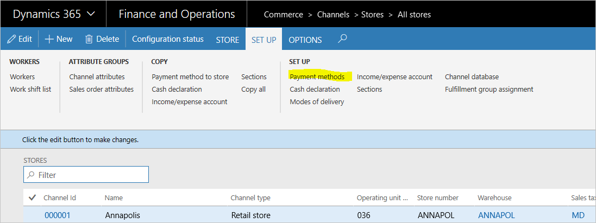
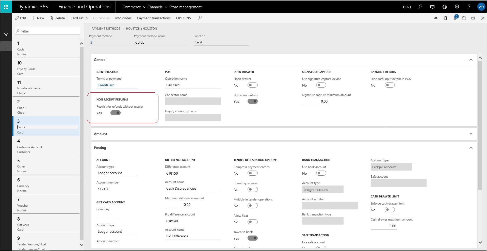
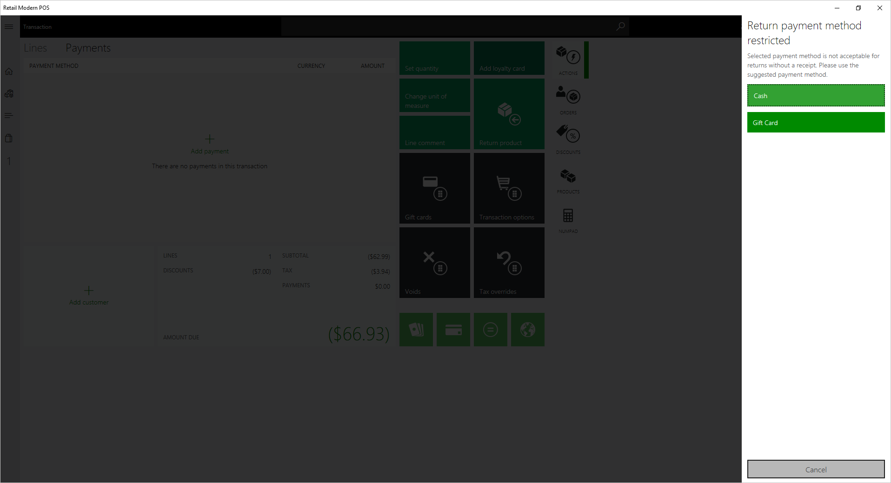

Zahlungsmethoden für Retouren ohne Beleg beschränken
Important
Dynamics 365 Retail ist jetzt Dynamics 365 Commerce und bietet umfassende Handelsfunktionen für alle Kanäle – von E-Commerce über Shops bis hin zu Callcentern. Weitere Informationen zu diesen Änderungen finden Sie unter Microsoft Dynamics 365 Commerce.
Jeder Zahlungstyp, der von einem Einzelhändler akzeptiert wird, muss beim Einrichten des Systems konfiguriert werden. In diesem Thema wird beschrieben, wie bestimmte Zahlungsarten für die Rückerstattung eingeschränkt werden können, wenn die Rücksendung ohne Beleg erfolgt.
Einrichten von Zahlungsmethoden
Zum Einrichten von Zahlungsmethoden müssen die folgenden Aufgaben abgeschlossen sein.
- Erstellen Sie die Zahlungsmethoden, die von der gesamten Organisation akzeptiert werden.
- Einrichten von organisationsweiten Kartentypen und Kartennummern Wenn Kredit- oder Debitkarten akzeptiert werden, müssen Sie eine Zahlungsmethode für Karten und anschließend die organisationsweiten Kartentypen und Kartennummern erstellen.
- Einrichten von Shopzahlungsmethoden. Ordnen Sie die Zahlungsmethoden den einzelnen Shops zu, und geben Sie dann für jede Zahlungsmethode shopspezifische Einstellungen ein.
- Einrichten von Kartenzahlungsmethoden für Shops Schließen Sie für alle Zahlungsmittel vom Typ "Karte", die im Shop akzeptiert werden, die Karteneinrichtung ab.

Zahlungsmethoden für Retouren ohne Beleg beschränken
Setzen Sie für jede Shop-Zahlungsmethode auf der Seite Shopverwaltung unter Retouren ohne Beleg Beschränkung für Rückerstattungen ohne Beleg auf Ja.
Der Standardwert des Umschalters ist Nein, wodurch sichergestellt wird, dass der Zahlweg für Rückerstattungen zugelassen wird.
Wenn Beschränkung für Rückerstattungen ohne Beleg auf Ja gesetzt ist, wird die gewählte Zahlungsmethode für Rückerstattungen nicht zugelassen.

Note
Wenn ein Kassierer eine Zahlungsmethode auswählt, die ohne Beleg für die Rückerstattung eingeschränkt ist, wird eine Meldung angezeigt, um die zulässigen Zahlungsmethoden zu überprüfen.

Wenn eine Transaktion sowohl eine quittierte Rücksendung als auch eine Rücksendung ohne Beleg hat, werden die Einschränkungsbedingungen nicht durchgesetzt, da es sich bei der Transaktion um einen Rückgabe-Workflow mit Beleg handelt.